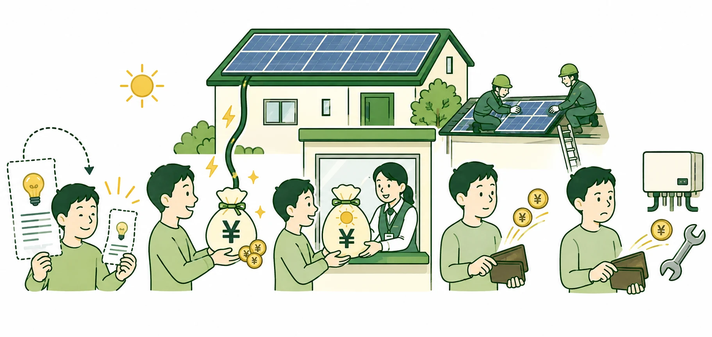
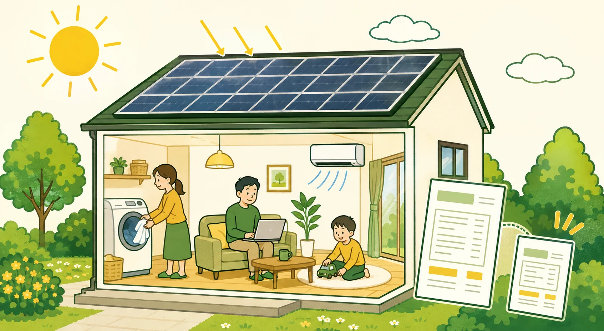

この記事で分かること
得られる効果：電気代削減，売電収入および利用できる補助金を確認できます．
かかる費用：設置費に加え，点検費と機器交換費まで確認できます．
収支が変わる条件：電気の使い方，屋根，設備容量および見積価格の影響が分かります．
「本当に元が取れるのか」「電気代が高い家庭ほど得なのか」「売電だけで費用を回収できるのか」「点検や機器交換まで含めると，結局いくら残るのか」．導入前には，収入だけでなく将来の支出も気になります．
特に，電気代が高く，昼間にも電気を使う家庭では，太陽光の経済効果が大きくなりやすい傾向があります．ただし，電気代の高さだけで利益は決まりません．昼間に使う量，余剰電力の売電，設置費，補助金および将来の維持・交換費を，同じ期間で比べる必要があります．
自分の条件で確かめる
地域，電気料金，屋根方位および昼間の在宅状況から，20年間の概算を確認できます．
実際の設置費を確かめる
見積もりサービスの利用は無料です．現地調査費は施工会社・条件で確認します．
広告・アフィリエイトを含みます．
収支の全体像
太陽光の収支は，20年間に得られる電気代削減と売電収入に，利用できる補助金を加え，設置費と維持・交換費を差し引いて考えます．電気代削減は支出が減る効果，売電収入は余った電気を売って得る収入であり，性質は異なります．

- 電気代削減現金を受け取るのではなく，電力会社へ支払う金額が小さくなります．
- 売電収入太陽光パネルから送った余剰電力の対価が，家庭の収入になります．
- 補助金対象条件を満たす場合，国や自治体等から初期負担を下げる給付を受けます．
- 設置費太陽光パネルと工事へ，家計から支出します．
- 維持・交換費点検，修理およびパワーコンディショナ交換へ，家計から支出します．
20年間の正味利益は，電気代削減，売電収入および補助金の合計から，設置費と維持・交換費を差し引いて考えます．
補助金は初期負担を下げますが，地域，年度，住宅および設備の条件を満たす場合に限られます．制度が表示されても受給が確定するわけではありません．設置費には設備と標準工事だけでなく，屋根や配線による追加工事が生じることがあります．
したがって，「発電量が多い」「補助金がある」「見積価格が安い」のどれか一つだけでは判断できません．収入・削減効果と費用を同じ期間で並べ，条件の確からしさも合わせて確認します．
電気代削減は，昼間に使える量で変わる
太陽光が発電している時間に家庭で電気を使うと，電力会社から買う電力量を減らせます．この自家消費量に買電単価を掛けた金額が，電気代削減の基本です．同じ発電量でも，昼間に在宅して家電を使う家庭と，電力使用が夜間に偏る家庭では，自家消費できる量が異なります．
買電単価が高いほど，1 kWhを自家消費したときに避けられる支出は大きくなります．ただし，月間電気料金が高くても，使用時間が夜間中心なら，昼間の発電と重ならず削減効果が限られる場合があります．電気料金の総額だけでなく，いつ電気を使うかを確認する必要があります．
実際の買電料金は，1つの単価を全使用量へ掛けるとは限りません．東京電力エナジーパートナー「従量電灯B」の30 A契約を例にすると，基本料金は935.25円／月，電力量料金は最初の120 kWhまで29.80円／kWh，120 kWh超300 kWhまで36.40円／kWh，300 kWh超の部分が40.49円／kWhです．40.49円／kWhを月間使用量の全量へ掛ける計算ではありません（東京電力エナジーパートナー，2026a）．
これらに燃料費調整額と再生可能エネルギー発電促進賦課金等が加わります．2026年度の賦課金は4.18円／kWhで，2026年5月検針分から2027年4月検針分まで適用されます（経済産業省，2026）．契約プラン，契約容量，使用量および検針月を分けて確認してください．
はれトク診断は，地域別の買電単価と年間発電量に加え，標準住宅の8760時間需要と屋根方位別の日射量を重ね，平日昼間の在宅状況に応じて年間の自家消費量を概算します．これは個別住宅の時間帯別負荷を再現するものではないため，生活時間が季節や曜日で大きく変わる家庭では幅を持って見ます（建築研究所，2026；NEDO，年不明；エネルギー・資源学会，2025）．
売電収入は，余る量と時期ごとの単価で変わる
発電した電気のうち，家庭で使い切れなかった余剰電力が売電の対象です．発電量が同じなら，自家消費が少ないほど売電量は増えます．したがって，電気代削減と売電収入は別々に最大化されるのではなく，同じ発電電力量を自家消費と売電へ分ける関係にあります．
太陽光パネルで発電した電気は，発電と同時に家庭内で使う自家消費分と，家庭で使い切れず電力会社等へ売る余剰売電分に分かれます．発電量は，自家消費量と売電量の合計です．
2025年度下半期および2026年度に認定される10 kW未満の住宅用太陽光では，FITの買取価格は1～4年目が24円／kWh，5～10年目が8.3円／kWhで，調達期間は10年間です（経済産業省，2026）．同じ売電量でも，年によって収入が変わるため，24円／kWhを10年間や20年間の全期間へ適用してはいけません．
FIT期間終了後は，電力会社等が提示する条件で売電先を選びます．はれトク診断が11～20年目に置く8.50円／kWhは，東京電力エナジーパートナー「再エネ買取標準プラン」の例です．対象は同社所定の栃木県，群馬県，茨城県，埼玉県，千葉県，東京都の島しょ地域を除く地域，神奈川県，山梨県および静岡県の富士川以東で，FIT満了までの売電先等に応じて手続も異なります．全国共通の卒FIT価格や将来の保証価格ではありません（東京電力エナジーパートナー，2026b）．
設置費は，容量だけでなく屋根と工事で変わる
設置費には，太陽光パネル，パワーコンディショナ，架台，配線，標準工事および諸経費が含まれます．容量を増やすと発電量は増えやすい一方，必要なパネルと機器も増えるため，費用も同時に変わります．はれトク診断は，既築住宅の市場データに基づく1 kW当たりの代表費用を用います（調達価格等算定委員会，2026）．
実際の総額は，屋根面数，屋根材，足場，分電盤・パワーコンディショナの位置，配線の引回し，機器の重量および搬入方法で変わります．屋根面が分かれるほど架台・配線の構成が複雑になり，屋根材が異なれば固定金具と防水処理も変わります．建物の高さや周囲の作業空間は足場に，分電盤・パワーコンディショナと屋根の距離や壁内配線の可否は配線長，貫通部および仕上げ復旧に影響します．重量のある機器を狭い通路や上階へ運ぶ場合は，搬入経路と揚重方法の確認も必要です（京セラ，2026a，b）．
これらは追加工事が必要になる理由であり，現地確認前の追加額を示すものではありません．同じ容量でも，追加工事の範囲や見積書の内訳が違えば価格は一致しません．施工会社による価格差が，機器・工事・保証のどの差から生じるかを切り分けます．
診断では代表費用を使って採算の目安を確認し，見積もりでは自宅に設置できる容量と工事範囲を確認します．補助金控除前の税込総額，追加費用が生じる条件および保証対象を同じ形式で比較すると，価格差の理由を追いやすくなります．
導入後の費用は，発生する年を分けて見る
太陽光は設置時だけでなく，点検，修理および機器交換にも費用がかかります．ただし，これらがすべて毎年発生するわけではありません．経済産業省の2026年資料は，住宅用5 kW設備を想定した業界ヒアリング値として，3～5年ごとに1回程度の定期点検と約3.8万円／回，20年間に1回のパワーコンディショナ交換と約38.4万円を示しています．特定製品・施工会社の価格や保証内容を示す値ではありません（調達価格等算定委員会，2026）．
太陽光発電協会は，専門業者による定期点検を設置後1年，その後は4年ごとに推奨しています．これは同協会が示す推奨時期であり，その頻度自体を一律の法定義務として説明しません．必要な点検は設備，使用・故障状況および適用される制度で異なるため，販売店，工務店またはメーカーへ確認します（太陽光発電協会，年不明）．
実際の故障時期と費用は製品，保証，設置環境および使用状況で変わります．保証期間内でも，出張費，足場，撤去・再設置等が対象外となる場合があるため，見積書と保証書で負担範囲を確認します．日常点検と専門業者の定期点検の違いは，費用記事の維持・交換費で確認できます．
収支を大きく変える条件
| 発電量 | 地域の日射，屋根方位および影で変わります．地域と屋根方位は診断，影と設置可否は現地調査で確認します． |
|---|---|
| 昼間の使用量 | 発電中に使う量が多いほど自家消費が増えやすくなります．平日昼間の在宅状況は診断，時刻別の実態は電力使用データで確認します． |
| 買電・売電単価 | 買電単価は電気代削減，売電単価は余剰電力の収入を変えます．現在の契約と将来の見直し可能性を分けます． |
| 設置容量 | 容量を増やすと発電量と設置費がともに変わります．診断で容量別に比較し，屋根へ載せられる容量は現地調査と見積もりで確認します． |
| 設置費・追加工事 | 屋根，足場，配線，機器および施工会社で変わります．診断では代表値，正式な金額は同条件の見積書で確認します． |
| 補助金 | 地域，年度，設備，契約・着工時期等の条件を満たす場合に初期負担を下げます．適用可否は公式情報で確認します． |
| 維持・交換費 | 点検，修理，機器交換の時期と保証範囲で変わります．診断の代表支出と契約上の負担を区別します． |
同じ4 kWでも，昼間の使い方で結果が変わる
次は，はれトク診断の公開データ2026-09-05版を使い，東京都，4 kW，南向き，月間電気料金は未入力を共通条件として，平日昼間の在宅状況だけを変えた標準シナリオの例です．未入力時には「戸建て・4人以上世帯の地域平均（令和5年度）」である関東甲信15,467円／月を使用します．確認済みの東京都補助金480,000円を含み，電気料金上昇率は比較用仮定として年1.5％です．実際の住宅を示す事例ではなく，条件の違いが結果へ及ぼす方向を確認する比較です（東京都環境公社，2026）．
| 項目 | 家庭A | 家庭B |
|---|---|---|
| 平日昼間の在宅状況 | ほぼ毎日いる | ほとんどいない |
| 年間の自家消費量 | 1,725 kWh | 1,637 kWh |
| 年間の売電量 | 2,263 kWh | 2,351 kWh |
| 20年間の電気代削減 | 1,244,913円 | 1,181,320円 |
| 20年間の売電収入 | 522,301円 | 542,638円 |
| 20年間の正味利益 | 348,814円 | 305,559円 |
家庭Aは家庭Bより年間88 kWh多く自家消費し，その分だけ売電量が少なくなります．20年間では，売電収入が20,337円少ない一方，電気代削減が63,593円多く，正味利益は43,255円改善します．これは，この条件では買電を避ける価値が売電単価を上回る期間が続くためです．
両家庭とも表示結果は黒字ですが，昼間の在宅が多いことだけで採算が決まるのではありません．発電量，補助金，設置費および維持・交換費を含む全条件を合わせて判断する必要があります．数値の算出方法と採用値は計算方法・使用データで確認できます．
注意点
条件によっては費用を回収できません
発電量や自家消費が見込みを下回る場合，設置費や追加工事が高い場合，または補助金を利用できない場合は，20年間でも正味利益がマイナスになり得ます．診断は導入を勧める判定ではありません．
採算を見直すときは，設置容量と見積価格を変え，太陽光のみと蓄電池併用を同じ条件で比較します．それでも家計上の負担が大きい場合は，導入を見送ることも妥当です．
停電への備えを重視する場合は，経済的な回収とは別の価値として検討します．太陽光単独と蓄電池併用では停電時の制約が異なるため，必要な電力を供給できる設備構成かを施工会社へ確認してください．この確認は，赤字が解消することを意味しません．具体的な給電条件は停電時，太陽光だけで何ができる？で確認できます．
向いている家庭と，慎重に考えたい家庭
比較的，経済効果を得やすい条件
- 電気代が高い：買電単価と使用量が大きいほど，自家消費で避けられる支出は大きくなりやすい．ただし，夜間中心の使用では効果が限られる．
- 昼間の電力使用が多い：発電中に電気を使うため，自家消費を増やしやすい．
- 設置費が低い，または補助金を利用できる：追加工事が少ない見積もりや，条件を満たす補助金は初期負担を下げる．
- 日当たりのよい屋根に十分な容量を載せられる：影が少なく，必要な容量を設置できる屋根は，発電量を確保しやすい．

導入を慎重に考えたい条件
- 周囲の建物や樹木の影が大きく，発電量を確保しにくい．
- 電力使用が夜間に偏り，蓄電池を含めない太陽光単体では自家消費しにくい．
- 屋根補強，足場，配線等の追加工事が多く，初期負担が高い．
- 保証対象外の修理や将来の交換費を含めると，家計上の許容範囲を超える．
これらは結果が変わる方向を示す条件であり，「向いている」側に多く当てはまっても利益を保証しません．反対に，慎重に考えたい条件があっても，設置容量や費用を調整すると判断が変わる場合があります．
記事で理解し，診断で概算し，見積もりで個別条件を確認する
- 記事で構造を理解する：自分の収支を増減させる条件と，見落としやすい費用を把握します．
- 診断で概算する：地域，電気料金，屋根方位，昼間の在宅状況および容量を変え，20年間の収支と不利なシナリオを確認します．
- 必要なら見積もりで個別条件を確認する：現地調査に基づく屋根条件，設置可能容量，追加工事の範囲・金額および保証を同じ仕様で比較します．発電見込みは算定前提を，補助金は適用条件と申請時期を確認します．
診断結果が赤字なら，その時点で見送ることも合理的です．黒字でも，概算で確定できない住宅固有条件を確認するまでは，利益が確定したとは扱いません．
まとめ
太陽光の収支は，発電量だけでなく，発電した電気の使い方と売り方，補助金，設置費および導入後の費用を同じ20年間で比べて判断します．
自分の条件で確かめる
地域，電気料金，屋根方位および昼間の在宅状況から，20年間の概算を確認できます．
実際の設置費を確かめる
見積もりサービスの利用は無料です．現地調査費は施工会社・条件で確認します．
広告・アフィリエイトを含みます．
参考文献
公開データを確認しています．